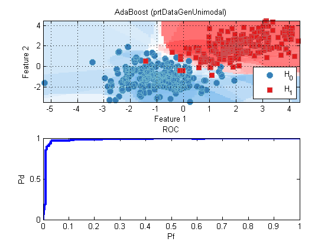
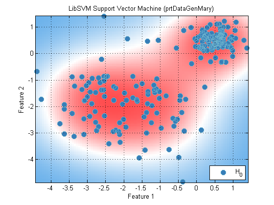

Some examples of different classification techniques
In this section a few different classification techniques are presented.
Contents
Meta-classifiers: Boosting, Bagging and Bumping
Boosting and bagging classifiers make use of multiple weak classifiers to build a strong classifier. A common example of this is the ADA boost algorithm. Consider the following example:
classifier = prtClassAdaBoost % Create a classifier
classifier =
prtClassAdaBoost
Properties:
name: 'AdaBoost'
nameAbbreviation: 'AdaBoost'
isNativeMary: 0
baseClassifier: [1x1 prtClassFld]
maxIters: 30
deltaPeThreshold: 0.0500
downSampleBootstrap: 0
twoClassParadigm: 'binary'
internalDecider: []
isSupervised: 1
isCrossValidateValid: 1
verboseStorage: 1
showProgressBar: 1
isTrained: 0
dataSetSummary: []
dataSet: []
userData: [1x1 struct]
Note that classifier has two properties related to boosting, the maximum number of boosts, maxIters, which defaults to 30, and the baseClassifier. The maximum number of interations indicates the upper bound on the number of instances of the base classifier that will be used to construct the overall classifier. The base classifier can be any prtClass object, however, it is recommended that this classifier be a simple classifier that trains quickly, such as prtClassFld or prtClassGlrt. If you select a classifier that has a long training time, the boosting classifier will take substantially longer.
For example, set the number of maximum iterations to 20 and the baseClassifier to a prtClassGlrt.
classifier.maxIters = 20; classifier.baseClassifier = prtClassGlrt;
Create a data set, train and plot the receiver operating curve
TestDataSet = prtDataGenUnimodal; % Create some test and TrainingDataSet = prtDataGenUnimodal; % training data classifier = classifier.train(TrainingDataSet); % Train classified = run(classifier, TestDataSet); % Test subplot(2,1,1); classifier.plot; subplot(2,1,2); [pf,pd] = prtScoreRoc(classified,TestDataSet); h = plot(pf,pd,'linewidth',3); title('ROC'); xlabel('Pf'); ylabel('Pd');
Other examples of meta-classifiers classifier are prtClassBagging, prtClassTreeBaggingCap, prtClassBumping
M-ary classification with non-native M-ary classifiers
While some prtClass objects natively support M-ary classification, it is also possible to construct an M-ary classifier out of binary classifiers using the prtClassBinaryToMaryOneVsAll object. A one versus all classifier utilizes a binary classifier to make M-ary decisions. For all M classes, it selects each class, and makes a binary comparison to all the others. The following example demonstrates how to create an 3 class M-ary classifier out of a prtClassGlrt object.
TestDataSet = prtDataGenMary; % Create some test and TrainingDataSet = prtDataGenMary; % training data classifier = prtClassBinaryToMaryOneVsAll; % Create a classifier classifier.baseClassifier = prtClassGlrt; % Set the binary classifier % Set the internal Decider classifier.internalDecider = prtDecisionMap; classifier = classifier.train(TrainingDataSet); % Train classes = run(classifier, TestDataSet); % Test % Evaluate, plot results percentCorr = prtScorePercentCorrect(classes.getX,TestDataSet.getTargets) classifier.plot;
percentCorr =
0.8333

One-class classification with support vector machines
Support vector machines can be used to create one-class classifiers. One class classifiers are useful for doing a type of outlier removal. If training data is only available for one class, and you wish to determine if a sample is from that class or not, a one-class classifier might be useful. In the following example, we will create a 3 class M-ary dataset. We will mark two of the classes as being class 1, and test it with the 3rd class, which should be rejected and marked as not a member. First, create some data:
clear all; close all; Data = prtDataGenMary; % Create a data set with 3 classes % Remove one of the classes from the data set % We'll use this a test-case. classToRemove =1; classToKeep = setxor(classToRemove, 1:Data.nClasses); DataTest = Data.removeClasses(classToKeep); % Use the other two classes for training DataRemain = Data.removeClasses(classToRemove); % Mark these all to be of one class DataRemain = DataRemain.setY(zeros(size(DataRemain.getY)));
Now, create a one-class SVM classifier.
classifier = prtClassLibSvm; classifier.svmType = 2; % svmType of 2 denotes a one-class classifier % Train the classifier classifier = classifier.train(DataRemain); % Plot the trained classifier classifier.plot
In order to make decisions with a one-class classifier, you can use the prtDecisionOneClassPd object. In order to use this object, you must decide what probability of detection your application needs. Probablility of detection in this case means the percentage of data that belongs to the target class that will be marked as target.
% Create the prtDecision object, set the desired probabilty of detection, % and assign it to the classifier: decider = prtDecisionOneClassPd; decider.pd = .75; classifier.internalDecider = decider; % Test the decisions, you should see that the probability of detection % matches the desired pd set in the prtDecider object. resultTest = classifier.run(DataTest); resultTrain = classifier.run(DataRemain); Pd = sum(resultTrain.getX)/resultTrain.nObservations % In this context, Pf refers to the percentage of data that is not a member % of the desired class, but was catergorized as a member of that class. Pf = sum(resultTest.getX)/resultTest.nObservations
Pd =
0.7500
Pf =
0.4600